Quick Start Setup Guide
Follow this step-by-step guide to get your Trade Copier Ultimate connected and executing your first signal within minutes.
1. Download & Install the Bridge
First, download the NTS Super Bridge from the main website. Run the installer and complete the setup.

2. Attach the EA & WebRequest
Open MT5, drag the Trade Copier Ultimate EA onto a chart, and allow AutoTrading. Ensure you have added http://localhost:5555 or your specific WebRequest URL in the MT5 Options -> Expert Advisors tab.

Go to the Source tab in the EA and ensure Bridge Mode is set to ON and listening on port 5555.

3. Log in to Telegram on Bridge
Open the NTS Bridge app, go to Signal Sources, and log in to your Telegram account using your phone number and the code sent to your Telegram app.

4. Fetch Groups & Select
Navigate to the Telegram Groups tab in the Bridge. Click Fetch from Telegram to load your chats. Select the groups you want to forward signals from and click Save Now.

5. Start the Bridge
Once you have selected your groups, click the large orange START BRIDGE button in the bottom left corner of the app. The bridge will connect to your MT5 EA and begin listening for signals.

6. Set Up Lot Size (Per-Symbol)
Back in the MT5 EA, navigate to the Lots tab. Here you can configure specific lot sizes per symbol (e.g., Gold vs Forex pairs) using the Per-Sym Lots feature.


7. Arm the EA & Receive Signals
CRITICAL: You must click the ARM button at the top of the EA to receive and execute trades. When the EA is in the DISARMED state, it will ignore all incoming signals and will not execute any trades. It acts as an instant on/off switch for your copier.

1. Core Configuration
This section covers the fundamental settings required to get Trade Copier Ultimate parsing signals and opening trades correctly.
Home & Source Tabs
The Home tab serves as your main dashboard, displaying live status, connection state, and the last parsed signal. The Source tab is where you configure your input method (Bridge vs Webhook).

Copier & Trade Tabs
The Copier tab is extremely powerful, allowing you to use the EA as a local MT4/MT5-to-MT5 copier. You can set it to MASTER to broadcast trades, or SLAVE to receive them locally. The Trade tab covers execution details like copying SL/TP, reversing signals, and handling pending orders.
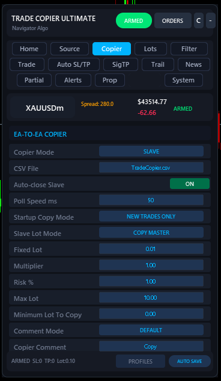
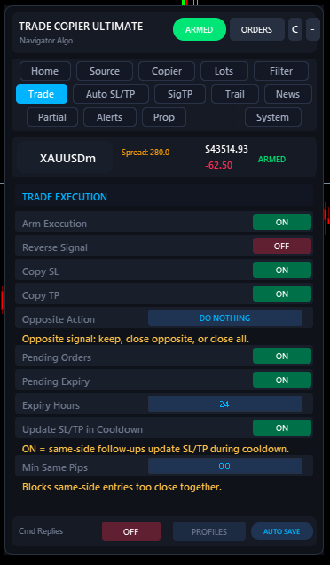
Lots & Risk Sizing
Manage your risk directly from the Lots tab. You can set a global lot size, use a percentage of your equity, or define per-symbol overrides for specific pairs.
2. Trade Management
This section covers how the EA manages trades after they are opened, including stop losses, take profits, trailing stops, and partial closures.
Auto SL/TP
The Auto SL/TP tab acts as a fallback mechanism. If a signal arrives without a Stop Loss or Take Profit, the EA can automatically inject one based on fixed points. It can also skip dangerous signals completely if they lack a Stop Loss.
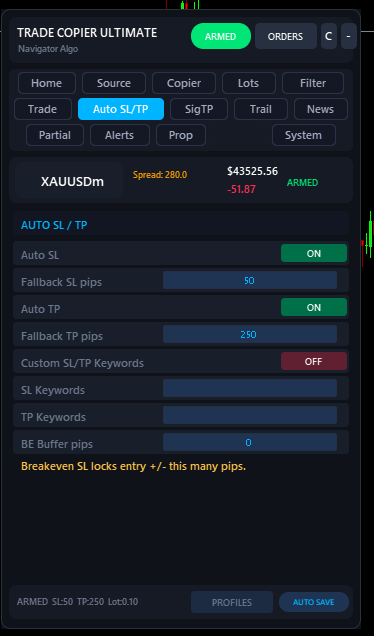
Signal TP (SigTP)
If your signal provider sends multiple targets (e.g., TP1, TP2, TP3), the SigTP tab handles them. By enabling Multi-TP Split, the EA will split the trade into multiple smaller orders (one for each TP) and distribute the lots according to your percentage allocation.
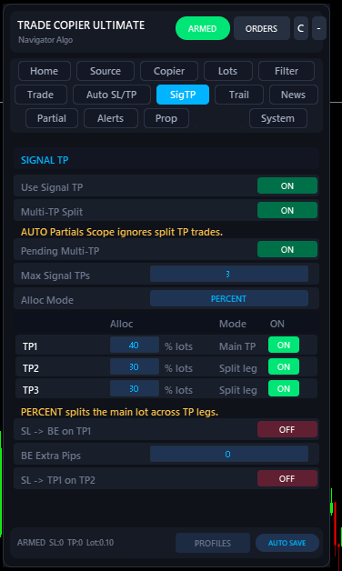
Trailing Stop
The Trail tab allows you to lock in profits automatically. Define when the trail starts (in pips) and how closely it follows the price. You can also automatically move the Stop Loss to Break-Even (plus a buffer) once the trail starts.
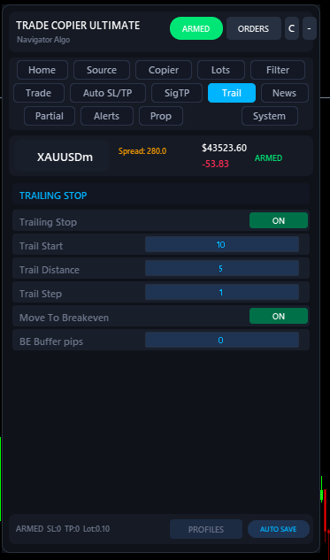
Partial Close
The Partials tab lets you close portions of a trade at specific pip milestones instead of relying on fixed TP prices. For example, you can tell the EA to close 20% of the trade at +10 pips and automatically move the SL to break-even.
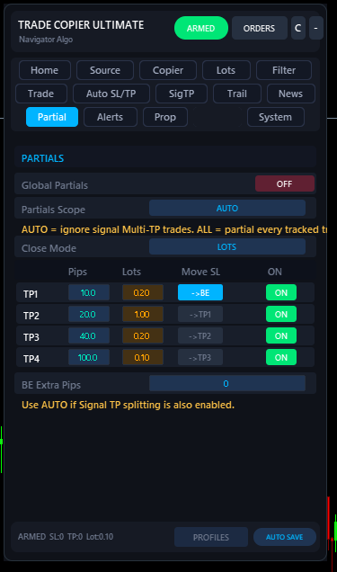
3. Protection & Filtering
Protect your account from bad signals, extreme market conditions, and duplicate trades. This section covers the Filter, News, and Prop Firm tabs.
Filters & Safety
The Filter tab contains multiple pages of safety checks (use the Next/Previous buttons at the bottom). You can filter trades by maximum spread, slippage, time of day, whitelist/blacklist specific symbols, and prevent duplicate trades or same-direction signals within a cooldown period.
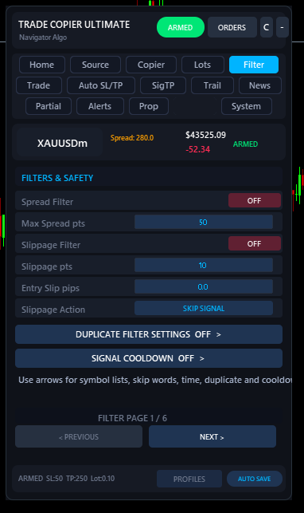
News Pause
The News Pause tab connects directly to the economic calendar. It can automatically pause new trades around high or medium impact news events for specific currencies. Existing trades will continue to be managed, but new entries will be blocked until the cooldown expires.
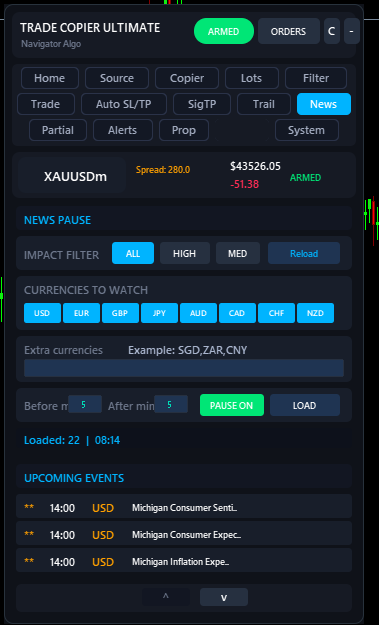
Prop Firm Mode
Built specifically for funded accounts, the Prop Firm Protection mode enforces strict risk rules. It can require every trade to have a Stop Loss, enforce a maximum daily loss limit (in % or $), and completely halt trading if you hit your drawdown limit to protect your account.
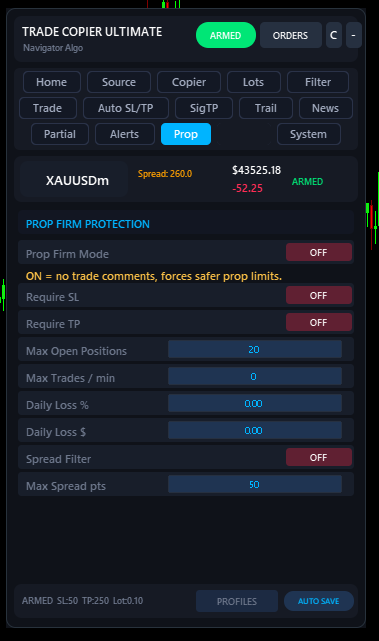
4. System & Alerts
Manage your notifications and core EA configurations.
Alerts & Broadcast
The Alerts tab controls local MT4/MT5 popup and sound notifications. Furthermore, you can enable Telegram Broadcast to forward the trades you receive straight to your own Telegram channel or group using your own Bot token!
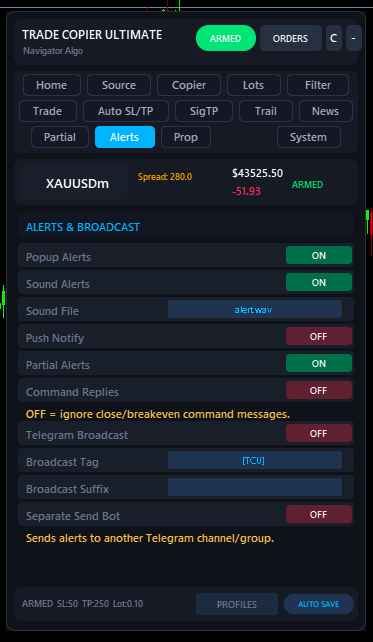
System Settings
The System tab is where you configure the core engine. Set your Magic Number, enable extensive Diagnostic and Report Logs, and configure how the EA behaves when your MT5 terminal restarts.
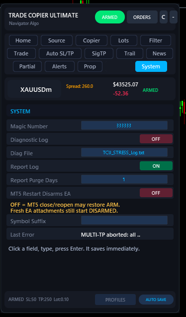
Bridge Application Deep Dive
The Navigator Bridge desktop app routes Telegram signals to your MT5 terminal. Here are the core management tabs for the bridge.
Telegram Groups
After logging in to Telegram, this tab lets you select exactly which channels or groups you want to fetch signals from. You can enable them per-account, allowing complete control over signal routing.
Prop Safe
The Bridge's Prop Safe mode modifies signals before they even reach the EA! It randomized entry delays and Stop Loss / Take Profit prices to ensure your trades don't perfectly match other users, protecting you from prop firm copy-trading flags.
MT5 Accounts & Drawdown Auto-Stop
View all connected MT5 accounts and configure Account-Level Drawdown protection. The bridge constantly monitors your equity; if your daily drawdown hits your threshold, the bridge immediately stops sending signals to that specific account.
Signal History
A complete log of every signal intercepted by the Bridge, showing you exactly how it was parsed (Direction, Symbol, SL, TP) and whether it was successfully routed or expired. This is an invaluable tool for debugging custom providers.
Troubleshooting & Common Errors
If a trade fails to execute, MT5 will usually return an error code in the Experts or Journal tab. Most of these are broker-level or platform-level restrictions, not bugs in the EA. Here are the most common error codes and how to fix them:
Error 10021: Disabled Instruments (Deep Dive)
If you see Error 10021 in your MT5 Experts tab, it means MT5 is rejecting the trade because the broker has disabled trading on that specific symbol suffix.
EURUSD, EURUSD.r, EURUSD.ecn). The standard EURUSD might be visible but read-only, while the .ecn version is the tradable one.
How to fix it:
- Open your MT5 Market Watch (Ctrl+M).
- Right-click and select Symbols (Ctrl+U).
- Find the exact suffix your account type uses (e.g.
.ecn,.m,m, etc.). - Go to the EA's System tab.
- Enter that exact suffix into the Symbol Suffix field (e.g.,
.ecn) and press Enter.